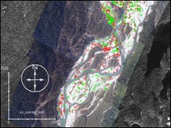

Large wood (defined as >10 cm diameter and 2m in length) has many functions within a river and is an important indicator of fish habitat. The pools formed by large wood provide critical over-wintering habitat for juvenile salmon. The ability to detect and monitor the spatial and temporal variability of large wood within a river system is a valuable resource management tool for biologists. In this study digital processing of high-resolution (45-60 cm) digital photography is carried out for detecting large wood in a large, glacial river. The study area is a 6 km stretch of the Unuk River located in Southeast Alaska.
Geocoded and mosaiced photos of the study area for for the spring time of 2003 and 2004 were made available from Alaska Department of Fish and Game. Supervised classification of the images to identify the large woods was unsuccessful due to the overlapping spectral signatures of wood and gravel. However, a combination of high pass and low pass filtering in the spatial domain proved to be very useful in mapping the distribution of the large woods on the two sets of images.
 The identified large wood was coded in red for the 2003 image and in green for the 2004 image. An overlay of the two datasets on the original image mosaic, as shown in the adjacent graphic is an excellent tools for analyzing the dynamics of the large wood in this stretch of the Unuk River. In a general comparison of the two images there appears to be more wood in the 2004 image accumulating towards the downstream right bank. The dynamics of the large wood (disappearance in some parts and accumulation in some otehr parts) have possibly contributed to the shift in the channel and departure of the split channel.